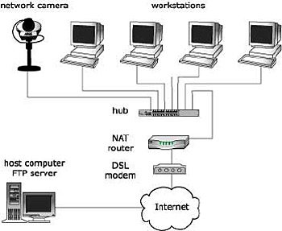

Un router serve per una rete informatica a commutazione di pacchetto, si occupa di instradare i dati, suddivisi in pacchetti, fra reti diverse. È quindi, a livello logico, un nodo interno di rete deputato alla commutazione di livello 3 del modello OSI o del livello internet nel modello TCP/IP